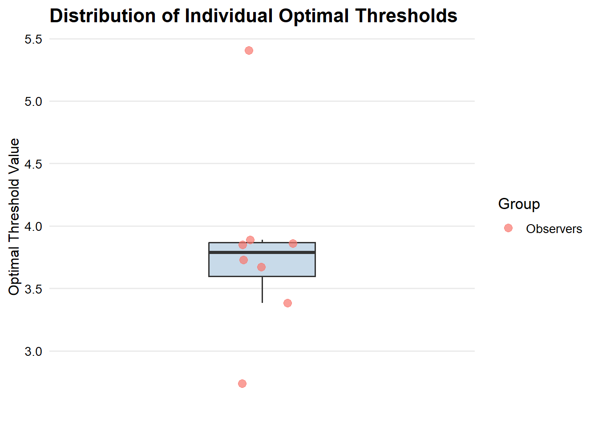
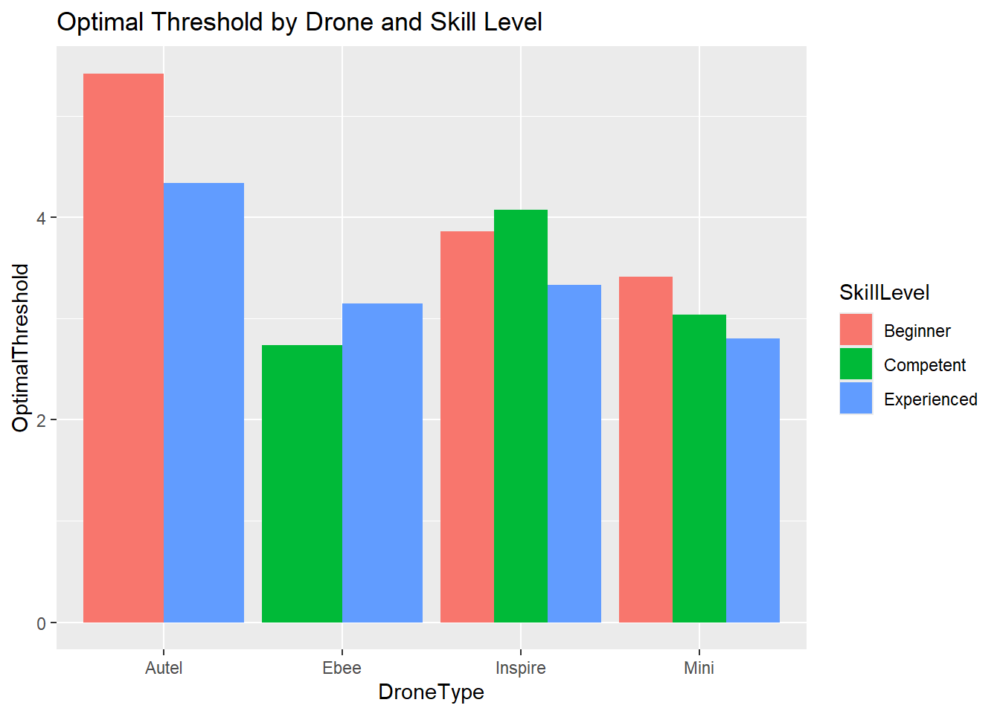
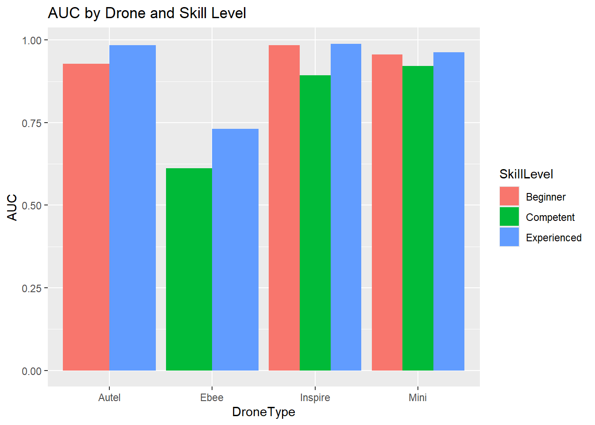

Analysis
Key Observations
Finding the Optimal Threshold
Using Recveiver Operator Characteristic Curve (ROC) and Youden’s Index to find the optimal thresholds. Optimal threshold is the arc minutes for a binary predictor, the area under the curve (AUC) is a measure of the predictive performance for that threshold. An AUC above 0.5 is indicative that the threshold is better than random guessing.
Breaking out by Model and Observer Experience
Setting direction: controls < cases
Setting direction: controls < cases
Setting direction: controls < cases
Setting direction: controls < cases
Setting direction: controls < cases
Setting direction: controls < cases
Setting direction: controls < cases
Setting direction: controls < cases
Setting direction: controls < cases
Setting direction: controls < casesWarning: Since gt v0.6.0 `fmt_missing()` is deprecated and will soon be removed.
ℹ Use `sub_missing()` instead.
This warning is displayed once every 8 hours.| Optimal Thresholds by Skill Level and Drone Type | |||||
|---|---|---|---|---|---|
| Ebee | Autel | Inspire | Mini | Avg | |
| Experienced | 3.15 | 4.34 | 3.33 | 2.80 | 3.41 |
| Competent | 2.74 | X | 4.07 | 3.04 | 3.28 |
| Beginner | X | 5.42 | 3.86 | 3.41 | 4.23 |
| Mean | 2.95 | 4.88 | 3.76 | 3.08 | 3.64 |


Accounting for variations in different observers, the mean is 3.8158835 arc minutes, suggesting that 4 arc minutes is an acceptable threshold.
Threshold Trends by Skill Level
- Inspire 2:
Threshold generally decreases with skill:- Beginner:
3.86 - Intermediate:
4.07 - Advanced:
3.33
Suggests that more experienced users are comfortable at longer distances.
- Beginner:
- Mini 2:
Clear decrease in threshold with increasing skill:- Beginner:
3.41 - Intermediate:
3.04 - Advanced:
2.80
Suggests that more experienced users are comfortable at longer distances.
- Beginner:
- Autel Evo 2 Pro V3:
- Beginner:
5.42(Intermediate missing) - Advanced:
4.34
Higher thresholds overall, but same trend — more experience = lower threshold.
- Beginner:
- Ebee:
- Intermediate:
2.74 - Advanced:
3.15
Unexpected reversal.
- Intermediate:
AUC (Model Performance by Group)
- High AUC for Beginners on Autel & Inspire:
- Autel:
0.93 - Inspire:
0.98
Implies a clear decision boundary — users were consistent when assessing VLOS for these aircraft.
- Autel:
- Advanced users maintain high AUCs across all drones:
- Generally above
0.96
Indicates consistency in expert performance.
- Generally above
- Intermediate users show lower AUCs:
- Ebee:
0.61 - Mini:
0.92
Suggests possible inconsistency in decision-making for this group. Perhaps somewhere in the middle of the Dunning Kruger effect.
- Ebee:
- Lower AUC for eBee may possibly be related to aircraft shape - moreso than other drones, the fixed-wing eBee’s viewing plane varies depending on viewing angle.
General Pattern
- Skill appears compensatory: Advanced observers consistently use lower thresholds, more experienced with consistent self-reported VLOS.
- Beginner thresholds are highest: Limited experience, afraid of going too far.
- Intermediate performance is the most variable: A little too experienced to be afraid, but too inexperienced to be consistent.
- Drone platform matters: Some variability between models, but consistent between groups suggest exploring tuning of aircraft model.
Linear Model Interpretation: Optimal Threshold
A linear model was used to estimate how observer skill level and drone type influence the optimal threshold for visibility detection.
Call:
lm(formula = OptimalThreshold ~ SkillLevel + DroneType, data = results2)
Residuals:
1 2 3 4 5 6 7 8
0.339229 -0.339229 0.227910 -0.227910 0.350845 -0.224108 -0.126737 -0.003802
9 10
-0.011616 0.015418
Coefficients:
Estimate Std. Error t value Pr(>|t|)
(Intercept) 5.1941 0.2933 17.706 5.98e-05 ***
SkillLevelCompetent -0.3625 0.3237 -1.120 0.32542
SkillLevelExperienced -0.6276 0.2869 -2.188 0.09394 .
DroneTypeEbee -1.7537 0.3964 -4.424 0.01148 *
DroneTypeInspire -1.1086 0.3424 -3.238 0.03174 *
DroneTypeMini -1.7792 0.3424 -5.196 0.00653 **
---
Signif. codes: 0 '***' 0.001 '**' 0.01 '*' 0.05 '.' 0.1 ' ' 1
Residual standard error: 0.3619 on 4 degrees of freedom
Multiple R-squared: 0.9149, Adjusted R-squared: 0.8085
F-statistic: 8.599 on 5 and 4 DF, p-value: 0.02904Model Summary
- Multiple R²: 0.91 — the model explains 91% of the variance in optimal thresholds.
- Adjusted R²: 0.81 — still strong after accounting for model complexity.
- F-statistic p-value: 0.029 — the overall model is statistically significant at the 0.05 level.
Coefficient Interpretation
| Term | Estimate | Interpretation |
|---|---|---|
| (Intercept) | 5.19 | Baseline: Beginner using Autel |
| SkillLevel: Competent | −0.36 | Slightly lower thresholds than Beginner (not significant) |
| SkillLevel: Experienced | −0.63 | Lower thresholds than Beginner (marginally significant, p = 0.094) |
| DroneType: Ebee | −1.75 | Significantly lower than Autel (p = 0.011) |
| DroneType: Inspire | −1.11 | Significantly lower than Autel (p = 0.032) |
| DroneType: Mini | −1.78 | Significantly lower than Autel (p = 0.0065) |
Interpretation
- Skill level shows a trend: Experienced observers tended to require lower thresholds than beginners, although this was only marginally significant.
- The reference group is a Beginner using an Autel drone.
Pairwise Comparisons: Skill Level Differences in Optimal Threshold
Estimated marginal means showed small, non-significant differences in optimal threshold between skill levels (averaged over drone types):
- Beginner vs Experienced: Beginners had higher thresholds by 0.63 arcminutes (p = 0.19)
- Beginner vs Competent: Difference of 0.36 arcminutes (p = 0.55)
- Competent vs Experienced: Difference of 0.27 arcminutes (p = 0.66)
None of these differences were statistically significant after Tukey adjustment, though the Beginner vs Experienced contrast showed the strongest trend.